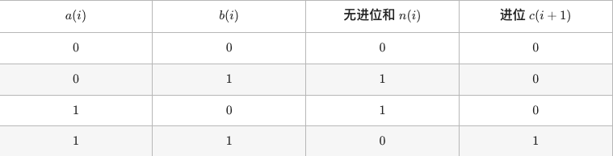

48. 剑指 Offer 51. 数组中的逆序对(困难)
-
归并排序：

归并排序的合并阶段，每当遇到左子数组元素>右子数组元素时，表示
左子数组当前元素到末尾元素与右子数组当前元素构成若干逆序对。在归并时用一个tmp辅助数组来暂存nums[i:j]内的元素。
class Solution: def reversePairs(self, nums: List[int]) -> int: def merge(l,r): if l>=r: return 0 m=l+(r-l)//2 res = merge(l,m)+merge(m+1,r) tmp[l:r+1]=nums[l:r+1] i,j=l,m+1 for k in range(l,r+1): if i==m+1: nums[k]=tmp[j] j+=1 elif j==r+1 or tmp[i]<=tmp[j]: nums[k]=tmp[i] i+=1 else: nums[k]=tmp[j] res+= m-i+1 j+=1 return res tmp=[0]*len(nums) return merge(0,len(nums)-1)
49. 剑指 Offer 52. 两个链表的第一个公共节点(简单)
-
双指针：当指针遍历到链表末尾时，转移到另一链表表头，直到
p1=p2。class Solution: def getIntersectionNode(self, headA: ListNode, headB: ListNode) -> ListNode: A, B = headA, headB while A != B: A = A.next if A else headB B = B.next if B else headA return A
50. 剑指 Offer 53 - I. 在排序数组中查找数字 I(简单)
-
二分法：
分别找到目标数字左边和右边的第一个元素索引left和right，答案为
right-left-1。helper函数旨在查找数字tar在nums中的插入位置，若存在值相同的元素，则插入右边。
class Solution: def search(self, nums: [int], target: int) -> int: def helper(tar): i, j = 0, len(nums) - 1 while i <= j: m = (i + j) // 2 if nums[m] <= tar: i = m + 1 else: j = m - 1 return i return helper(target) - helper(target - 1)
51. 剑指 Offer 53 - II. 0～n-1中缺失的数字(简单)
-
二分查找：
数组可以划分为
左子数组：nums[i]=i和右子数组：nums[i]!=i。缺失数字等于右子数组的首位元素索引。class Solution: def missingNumber(self, nums: List[int]) -> int: i, j = 0, len(nums) - 1 while i <= j: m = (i + j) // 2 if nums[m] == m: i = m + 1 else: j = m - 1 return i
52. 剑指 Offer 54. 二叉搜索树的第k大节点(简单)
-
中序遍历：
二叉搜索树的中序遍历的倒序为递减序列。
class Solution: def kthLargest(self, root: TreeNode, k: int) -> int: def dfs(root): if not root: return dfs(root.right) if self.k == 0: return self.k -= 1 if self.k == 0: self.res = root.val dfs(root.left) self.k = k dfs(root) return self.res
53. 剑指 Offer 55 - I. 二叉树的深度(简单)
-
层序遍历：
每遍历一层深度+1
class Solution: def maxDepth(self, root: TreeNode) -> int: if not root: return 0 queue, res = [root], 0 while queue: tmp = [] for node in queue: if node.left: tmp.append(node.left) if node.right: tmp.append(node.right) queue = tmp res += 1 return res -
DFS：
树的深度=max(左深度，右深度)+1
class Solution: def maxDepth(self, root: TreeNode) -> int: if not root: return 0 return max(self.maxDepth(root.left), self.maxDepth(root.right)) + 1
54. 剑指 Offer 55 - II. 平衡二叉树(简单)
树的深度=max(左深度，右深度)+1
-
后序遍历+剪枝（自底向上）：当某子树不是平衡树时直接剪枝
class Solution: def isBalanced(self, root: TreeNode) -> bool: def recur(root): if not root: return 0 left = recur(root.left) if left == -1: return -1 right = recur(root.right) if right == -1: return -1 return max(left, right) + 1 if abs(left - right) <= 1 else -1 return recur(root) != -1 -
先序遍历+判断深度（自顶向下）：当所有子树都是平衡树则是平衡树，产生很多重复计算
class Solution: def isBalanced(self, root: TreeNode) -> bool: if not root: return True return abs(self.depth(root.left) - self.depth(root.right)) <= 1 and \ self.isBalanced(root.left) and self.isBalanced(root.right) def depth(self, root): if not root: return 0 return max(self.depth(root.left), self.depth(root.right)) + 1
55. 剑指 Offer 56 - I. 数组中数字出现的次数(中等)
-
分组异或：
对所有数字进行一次异或，得到两个出现一次的数字的异或值。
在异或结果中找到任意为1的位。
根据这一位对所有的数字进行分组。在每个组内进行异或操作，得到两个数字。
class Solution: def singleNumbers(self, nums: List[int]) -> List[int]: x,y,n,m=0,0,0,1 for num in nums: n^=num while n&m==0: m<<=1 for num in nums: if num&m: x^=num else: y^=num return x,y
56. 剑指 Offer 56 - II. 数组中数字出现的次数 II(中等)
-
遍历统计：
class Solution: def singleNumber(self, nums: List[int]) -> int: counts = [0] * 32 for num in nums: for j in range(32): counts[j] += num & 1 num >>= 1 res, m = 0, 3 for i in range(32): res <<= 1 res |= counts[31 - i] % m return res if counts[31] % m == 0 else ~(res ^ 0xffffffff) -
有限状态自动机：
考虑数字的二进制形式，对于出现三次的数字，各二进制位出现的次数都是3的倍数。统计所有数字的各二进制位中1的出现次数，并对3求余，结果则为只出现一次的数字。

计算one的方法：
one = one^n & ~two利用计算后的one计算two：
two = two^n & ~oneclass Solution: def singleNumber(self, nums: List[int]) -> int: ones, twos = 0, 0 for num in nums: ones = ones ^ num & ~twos twos = twos ^ num & ~ones return ones
57. 剑指 Offer 57. 和为s的两个数字(简单)
-
双指针：
class Solution: def twoSum(self, nums: List[int], target: int) -> List[int]: i, j = 0, len(nums) - 1 while i < j: s = nums[i] + nums[j] if s > target: j -= 1 elif s < target: i += 1 else: return nums[i], nums[j] return []
58. 剑指 Offer 57 - II. 和为s的连续正数序列(简单)
-
滑动窗口（双指针）：
设置左右边界i和j，每轮循环判断窗口内和与目标值的大小关系。当相等时记录答案并右移左边界。
class Solution: def findContinuousSequence(self, target: int) -> List[List[int]]: i, j, s, res = 1, 2, 3, [] while i < j: if s == target: res.append(list(range(i, j + 1))) if s >= target: s,i = s-i,i+1 else: j,s=j+1,s+j return res
59. 剑指 Offer 58 - I. 翻转单词顺序(简单)
-
分割+倒序：
class Solution: def reverseWords(self, s: str) -> str: return ' '.join(s.strip().split()[::-1]) -
双指针：
倒序遍历字符串，将遍历到的每个单词加入res，最后将单词列表拼接为字符串。
class Solution: def reverseWords(self, s: str) -> str: s = s.strip() # 删除首尾空格 i = j = len(s) - 1 res = [] while i >= 0: while i >= 0 and s[i] != ' ': i -= 1 # 搜索首个空格 res.append(s[i + 1: j + 1]) # 添加单词 while s[i] == ' ': i -= 1 # 跳过单词间空格 j = i # j 指向下个单词的尾字符 return ' '.join(res) # 拼接并返回
60. 剑指 Offer 58 - II. 左旋转字符串(简单)
-
字符串切片：
class Solution: def reverseLeftWords(self, s: str, n: int) -> str: return s[n:] + s[:n] -
列表遍历拼接：若不允许使用切片则使用该方法
class Solution: def reverseLeftWords(self, s: str, n: int) -> str: res = [] for i in range(n, n + len(s)): res.append(s[i % len(s)]) return ''.join(res) -
字符串遍历拼接：若不允许使用
join()函数则使用该方法，由于高方法在每次遍历拼接字符串时都需要新建一个字符串，需要申请N次内存。class Solution: def reverseLeftWords(self, s: str, n: int) -> str: res = "" for i in range(n, n + len(s)): res += s[i % len(s)] return res
61. 剑指 Offer 59 - I. 滑动窗口的最大值(困难)
-
单调队列：
使用单调队列deque，仅包含窗口内元素，每次滑动窗口移除元素，也需将deque内对应元素删除。
deque内元素非严格递减，每次滑动窗口添加元素，也需将deque内所有小于
nums[j+1]的元素删除。class Solution: def maxSlidingWindow(self, nums: List[int], k: int) -> List[int]: deque = collections.deque() res, n = [], len(nums) for i, j in zip(range(1 - k, n + 1 - k), range(n)): if i > 0 and deque[0] == nums[i - 1]: # 删除 deque 中对应的 nums[i-1] deque.popleft() while deque and deque[-1] < nums[j]: # 保持 deque 递减 deque.pop() deque.append(nums[j]) if i >= 0: # 记录窗口最大值 res.append(deque[0]) return res
62. 剑指 Offer 59 - II. 队列的最大值(中等)
-
单调双向队列：
执行
push_back()时单调递增存储元素；执行pop_front()时，当出队是最大元素时，则同时将单调队列的首元素出队。class MaxQueue: def __init__(self): self.queue = [] self.deque = [] def max_value(self) -> int: return self.deque[0] if self.deque else -1 def push_back(self, value: int) -> None: self.queue.append(value) while self.deque and self.deque[-1]<value: self.deque.pop() self.deque.append(value) def pop_front(self) -> int: if not self.queue: return -1 val = self.queue.pop(0) if val==self.deque[0]: self.deque.pop(0) return val
63. 剑指 Offer 60. n个骰子的点数(中等)
-
动态规划：
n个骰子的点数和范围为
[n,6n]，数量为5n+1种。假设已知n-1个骰子的解为f(n-1)，则n个骰子点数和为x的概率$f(n,x)=\sum_{i=1}^{6}{(n-1,x-i)}\times\frac{1}{6}$。但这样逆向递推$x-i$会有越界情况，采用正向递推。
class Solution: def dicesProbability(self, n: int) -> List[float]: dp = [1 / 6] * 6 for i in range(2, n + 1): tmp = [0] * (5 * i + 1) for j in range(len(dp)): for k in range(6): tmp[j + k] += dp[j] / 6 dp = tmp return dp
64. 剑指 Offer 61. 扑克牌中的顺子(简单)
-
排序：
对数组排序，遍历。判别重复：若相邻元素相等则不能构成顺子。获取最大/最小牌：
nums[4]为最大牌，nums[jokers]为最小牌，其中jokers为大小王数量。class Solution: def isStraight(self, nums: List[int]) -> bool: nums.sort() jokers=0 for i in range(4): if nums[i]==0: jokers+=1 elif nums[i+1]==nums[i]: return False # 若有重复，提前返回 false return nums[-1]-nums[jokers]<5 # 最大牌 - 最小牌 < 5 则可构成顺子 -
集合Set：
class Solution: def isStraight(self, nums: List[int]) -> bool: repeat = set() ma, mi = 0, 14 for num in nums: if num == 0: continue ma = max(ma, num) mi = min(mi, num) if num in repeat: return False repeat.add(num) # 添加牌至 Set return ma - mi < 5
65. 剑指 Offer 62. 圆圈中最后剩下的数字(简单)
-
数学（约瑟夫环）：
输入n、m，记此约瑟夫环问题为f(n,m)。首轮删除数字为
(m-1)%n，删除后的数字环从下个数字m%n（记为t）开始： $$ t,t+1,\dots,0,1,\dots,t-2 $$ 此时数字环变成问题f(n-1,m)，并且有以下数字编号对应关系，即$x\rightarrow(x+t)%n$f(n-1,m) f(n,m)删除后 0 t+0 1 t+1 … … n-2 t-2 即有以下递推公式： $$ \begin{align} f(n) &=(f(n-1)+t)\%n\\ &=(f(n-1)+m\%n)\%n\\ &=(f(n-1)+m)\%n\\ \end{align} $$
class Solution: def lastRemaining(self, n: int, m: int) -> int: x = 0 for i in range(2, n + 1): x = (x + m) % i return x
66. 剑指 Offer 63. 股票的最大利润(中等)
-
贪心：
class Solution: def maxProfit(self, prices: List[int]) -> int: cost, profit = float("+inf"), 0 for price in prices: cost = min(cost, price) profit = max(profit, price - cost) return profit
67. 剑指 Offer 64. 求1+2+…+n(中等)
-
递归：
通过逻辑运算符的
短路效应实现当n=1时终止递归。class Solution: def __init__(self): self.res=0 def sumNums(self, n: int) -> int: n>1 and self.sumNums(n-1) self.res+=n return self.res
68. 剑指 Offer 65. 不用加减乘除做加法(简单)
-
位运算:
设两数的二进制为a和b，即求和$s=a+b$。分为以下四种情况：
即： $$ \begin{cases} n=a\oplus b\\ c=a&b«1 \end{cases} $$ 循环求n和c，直至
c=0，此时s=n。python负数的存储：
- 获取负数的补码。数字与十六进制数
0xffffffff相与，将该数字32位以上都变为 0，从无限长度变为一个 32 位整数。 - 返回前数字还原。若补码a大于最大的正数补码
0x7fffffff，则表示a为负数，需进行~(a^x)操作，将32位以上的位取反，1~32位不变。
class Solution: def add(self, a: int, b: int) -> int: x = 0xffffffff n, c = a & x, b & x while c != 0: n, c = (n ^ c), (n & c) << 1 & x return n if n <= 0x7fffffff else ~(n ^ x) - 获取负数的补码。数字与十六进制数
69. 剑指 Offer 66. 构建乘积数组(中等)
-
前缀积，后缀积：
前缀积
L[i]=a[0]*a[1]*...*a[i-1],后缀积R[i]=a[i+1]*a[i+2]*...*a[-1]。class Solution: def constructArr(self, a: List[int]) -> List[int]: l=len(a) L,R,ans=[1]+[0]*(l-1),[0]*(l-1)+[1],[0]*l for i in range(1,l): L[i]=L[i-1]*a[i-1] for i in range(l-2,-1,-1): R[i]=R[i+1]*a[i+1] for i in range(l): ans[i]=L[i]*R[i] return ans
70. 剑指 Offer 67. 把字符串转换成整数(中等)
-
模拟：
考虑四种字符：
- 首尾空格：删除即可；
- 符号位：三种情况，
+，-，无符号，用一个变量存储，返回前判断即可； - 非数字字符：遇到首个非数字字符返回；
- 数字字符：
- $x = ascii(c)-ascii(‘0’)$
- $res = res*10 + x $
越界处理：结果应在$[-2^{31},2^{31}-1]$范围内，超出范围截断即可。
class Solution: def strToInt(self, str: str) -> int: str = str.strip() # 删除首尾空格 if not str: return 0 # 字符串为空则直接返回 res, i, sign = 0, 1, 1 int_max, int_min, bndry = 2 ** 31 - 1, -2 ** 31, 2 ** 31 // 10 if str[0] == '-': sign = -1 # 保存负号 elif str[0] != '+': i = 0 # 若无符号位，则需从 i = 0 开始数字拼接 for c in str[i:]: if not '0' <= c <= '9' : break # 遇到非数字的字符则跳出 if res > bndry or res == bndry and c > '7': return int_max if sign == 1 else int_min # 数字越界处理 res = 10 * res + ord(c) - ord('0') # 数字拼接 return sign * res
71. 剑指 Offer 68 - I. 二叉搜索树的最近公共祖先(简单)
若root为p和q的最近公共祖先，则有：
- p和q在root异侧
- p=root且q在root子树中
- q=root且p在root子树中
-
递归：
class Solution: def lowestCommonAncestor(self, root: 'TreeNode', p: 'TreeNode', q: 'TreeNode') -> 'TreeNode': if root.val < p.val and root.val < q.val: return self.lowestCommonAncestor(root.right, p, q) if root.val > p.val and root.val > q.val: return self.lowestCommonAncestor(root.left, p, q) return root -
迭代：
class Solution: def lowestCommonAncestor(self, root: 'TreeNode', p: 'TreeNode', q: 'TreeNode') -> 'TreeNode': if p.val > q.val: p, q = q, p # 保证 p.val < q.val while root: if root.val < p.val: # p,q 都在 root 的右子树中 root = root.right # 遍历至右子节点 elif root.val > q.val: # p,q 都在 root 的左子树中 root = root.left # 遍历至左子节点 else: break return root
72. 剑指 Offer 68 - II. 二叉树的最近公共祖先(简单)
-
先序遍历：
当越过叶子结点返回None；root等于p或q时，返回root。
递归左右节点得到返回值left和right，分为以下几种情况：
- left，right都为空，说明root左右子树都不含p和q，返回None
- left，right均不为空，说明p和q在root异侧，则返回root
- left和right其中一个为空，说明p和q均在同一子树，返回不为空的left或right
class Solution: def lowestCommonAncestor(self, root: TreeNode, p: TreeNode, q: TreeNode) -> TreeNode: if not root or root == p or root == q: return root left = self.lowestCommonAncestor(root.left, p, q) right = self.lowestCommonAncestor(root.right, p, q) if not left and not right: return # 1. if not left: return right # 3. if not right: return left # 4. return root # 2. if left and right: